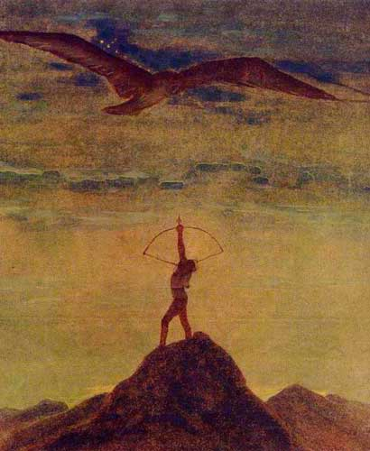
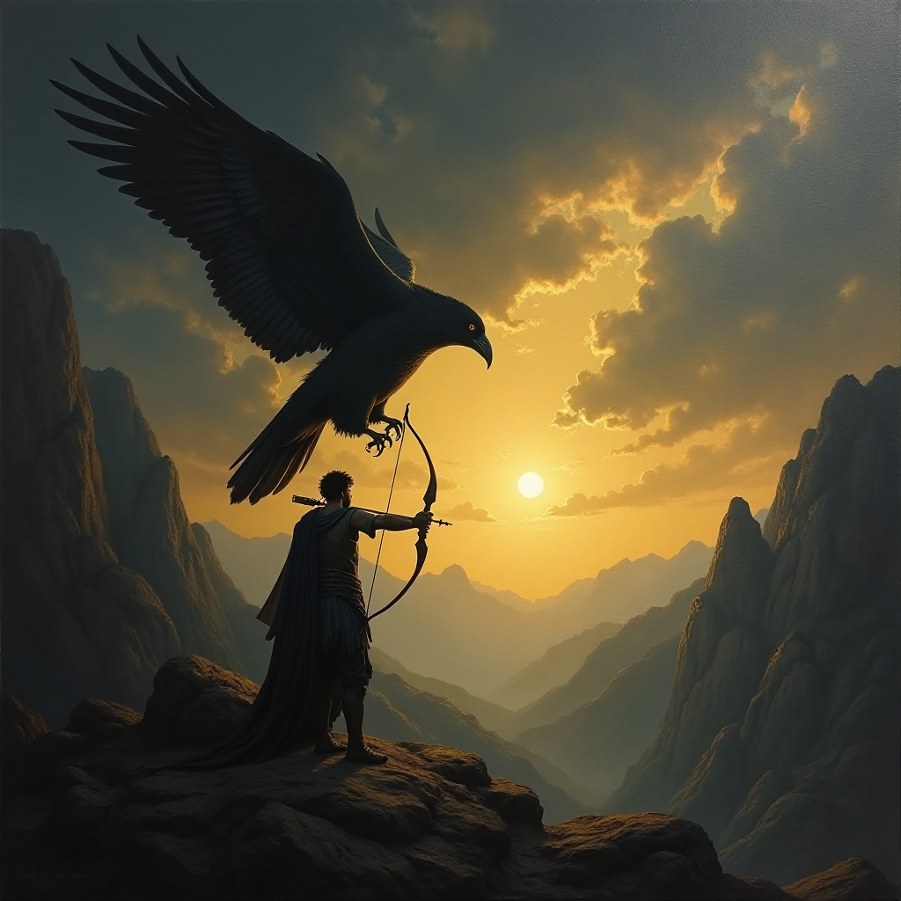

Mikalojus Konstantinas Čiurlionis ir lietuvių poetai
„Šaulys“

Salomėja Nėris
Iš M. K. Čiurlionio paveikslų
ŠAULYS
Rieda saulė —
Ugnies kamuolys.—
Per pasaulį
Žygiuoja šaulys.
Šalta žemėje, liūdna tenai:
Dengia saulę juodi slibinai.
Juodo paukščio sparnai dideli,—
Per šešėlius pražvelgi negali.
Saule degantį
Šaulį prašau:
— Juodą negandos
Paukštį nušauk!
Įtempta raumenų geležis,—
Kad laisva būtų žemė graži,
Kad sušiltų, atgytų gamta,—
Raumenų geležis įtempta.
Saulė kaitins
Vėl jūras, žemes.—
Saulės kraitį
Sukrausim ir mes.
Užklausa paveikslelio generavimui:
Juodi debesys ir tamsus paukštis
trukdo saulės šviesai pasiekti žemę.
Žemėje yra šalta ir liūdna,
nes saulės šviesa paslėpta po juodais dideliais
paukščio sparnais.
Šaulio, laikančio lanką nukreiptą į viršu į dangų
raumenų geležis simbolizuoja jėgą.
Už kalnų vos matomi geltoni atspalviai suteikia vilties,
kad vieną diena saulė grįš ir vėl sušildys pasaulį yra.
Angliškas vertimas generavimo įrankiui: DeepImg:
Black clouds and a dark bird prevent sunlight
from reaching the ground.
It is cold and sad on the ground
because the sunlight is hidden under the black wings of a large bird.
The iron in the muscles of the archer
holding his bow pointing upwards towards the sky symbolises strength.
The yellow hues barely visible behind the mountains give hope that one day the sun will return and warm the world again.
